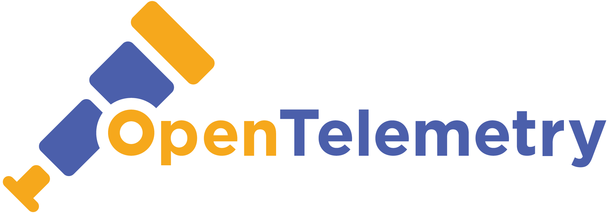

Learn OpenTelemetry
This site contains resources for learning OpenTelemetry.
- OpenTelemetry Astronomy Shop Demo A microservices sample app instrumented end to end.
- Training Free Linux Foundation OpenTelemetry Training Course.
- Awesome OpenTelemetry GitHub Repo A community-curated list of OpenTelemetry resources on GitHub.
- OpenTelemetry Collector GitHub Repo The vendor-agnostic pipeline for receiving and exporting telemetry on GitHub.
- OpenTelemetry Documentation The official OpenTelemetry docs.